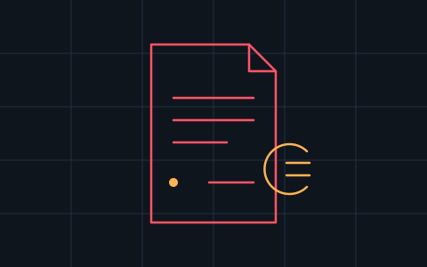

Billify
Open-Source-Rechnungsprogramm für deutsche Kleingewerbe — eine Codebasis für Web-App, Windows-Desktop und Android.
- GoBD-konforme Rechnungen
- E-Rechnung nach ZUGFeRD / Factur-X
- Kunden- und Artikelverwaltung
- Individuelle Rechnungsvorlagen und Umsatzberichte
- React
- NestJS
- PostgreSQL
- Tauri